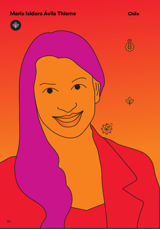

En esta página se busca rendir un homenaje a mujeres que, por su labor, esfuerzo y dedicación en el ámbito científico, han contribuido a mejorar la vida de las personas a través de la ciencia
Cuando tenía doce años me encantaba la egiptología. Pasaba horas leyendo sobre el trabajo minucioso de los arqueólogos en los sitios arqueológicos, excavando, catalogando las piezas e intentando armar el rompecabezas de la historia. Me enamoré del trabajo de investigación. Primero me acerqué a la ciencia por curiosidad, por el anhelo de entender cómo funcionan las cosas. Después, fue por el deseo de viajar y conocer el mundo. El trabajo científico nos da la flexibilidad de ejercer nuestra carrera en cualquier lugar. La ciencia me maravilla tanto que me identifico con Carl Sagan. Cada vez que Sagan hablaba sobre el Universo se percibía una genuina admiración por la ciencia. Cada vez que hablo de mi trabajo, tengo la misma expresión soñadora, mi encanto por la ciencia viene de la niña que llevo dentro. Pero como todas las científicas, creo Marie Curie es el ejemplo más importante. Es imposible no pensar en ella cuando hablamos de científicos notables. También admiro a tres científicas, las "Trimatas": Diane Fossey, Birutė Galdikas y Jane Goodall. Por ellas ingresé a la facultad de veterinaria, decidida a ser una científica dedicada a la conservación animal, principalmente de primates no humanos. Trabajando con reproducción encontré mi vocación que es ayudar a las mujeres a tener una vida mejor. Pero mi sueño más grande como científica, es que nazca un bebé sano después del trasplante de ovario artificial que estoy desarrollando. Mi objetivo es desarrollar un ovario transplantable artificial bioinspirado, que sería una alternativa segura y eficaz para restaurar la función ovárica en pacientes con cáncer que no pueden recibir un trasplante de tejido ovárico criopreservado. En 2010, creé el concepto de un ovario artificial. El desarrollo del ovario artificial es, por lo tanto, un cambio de paradigma importante, ya que su principal objetivo es reemplazar no solo la estructura del tejido perdido, sino más bien su función. Empecé el proyecto sola en 2008 y en 2014 cuando me efectivé como investigadora efectiva pude finalmente tener un equipo propio para trabajar en este proyecto. Con base en estudios en animales realizados por mi equipo, puedo decir que la viabilidad de este proyecto es significativamente alta. Sin embargo, no hay forma de predecir cuándo estará disponible un ovario artificial para las pacientes. Mi equipo está formado por cuatro estudiantes de doctorado y una de postdoctorado. Todas somos mujeres.
Cuando era pequeña y salíamos de vacaciones, a mi padre le gustaba indagar sobre las propiedades de los diferentes elementos naturales, aprovechabamos para tomar muestras de diferentes materiales para analizarlos. Durante aquellos muestreos, mis hermanas y yo hacíamos de sus mini-asistentes. Ya de vuelta en casa montaba sus experimentos: recuerdo que en uno de ellos se propuso estudiar la capacidad de absorción de agua en diferentes maderas; mientras lo acompañaba, me era inevitable ver el procedimiento, observar el proceso y cuestionarme por qué unos trozos de madera se hinchan más que otros. Esas experiencias con mi padre alimentaron mi mente curiosa. Además de esta influencia que tuve desde pequeña, durante mi primer año de carrera tuve que realizar un proyecto de investigación en un curso que se llama introducción a la biología marina. Nos llevaron a campo para hacer observaciones de los diferentes ambientes marinos y plantearnos una pregunta que tuvimos que desarrollar a lo largo del curso. El proceso me maravilló, me hice muchísimas preguntas, quería entender el porqué de todo. Asociando esta experiencia con la de mi niñez, me di cuenta de sí o sí iba a hacer una carrera como científica. Hoy como científica, me identifico con la Dra. Fernanda S. Valdovinos: es mujer, es joven, es Chilena. Gracias a su propio esfuerzo ha crecido muy rápido en su carrera. Es parte del cuerpo docente en muy buenas universidades de Estados Unidos y mantiene una producción científica muy alta en revistas de prestigio. Creo que podría describirme a mí misma, como una científica que es un ser humano humilde y sencillo, que quiere comprender cómo funcionan los ecosistemas a través de ciencia de calidad, para aplicar dichos conocimientos en el uso sostenible de los recursos naturales. Esta aspiración profesional también la llevo a mi vida privada: me hace feliz cultivar mis propios alimentos y producir mis propios productos de uso personal. Me encanta tener un estilo de vida autosustentable. Me apasiona levantarme cada mañana y recorrer la huerta y observar su evolución. El huerto lo riego con el agua de los lavados, por eso elaboro mis propios productos de limpieza en base a materia prima orgánica. Todo esto ha sido a punta de ensayo y error, actividades que suenan bastante simples pero que requieren de muchísimo tiempo, cuidado y dedicación. Me deslumbra cómo las observaciones y pensamientos de Darwin, dos siglos atrás, nos han ayudado tanto a entender la naturaleza y siguen siendo inspiración de una alta diversidad de estudios. Quiero que mi legado científico contribuya al manejo eficiente de los recursos naturales manteniendo, la estabilidad económica y social de los pescadores artesanales y la salud de los ecosistemas.